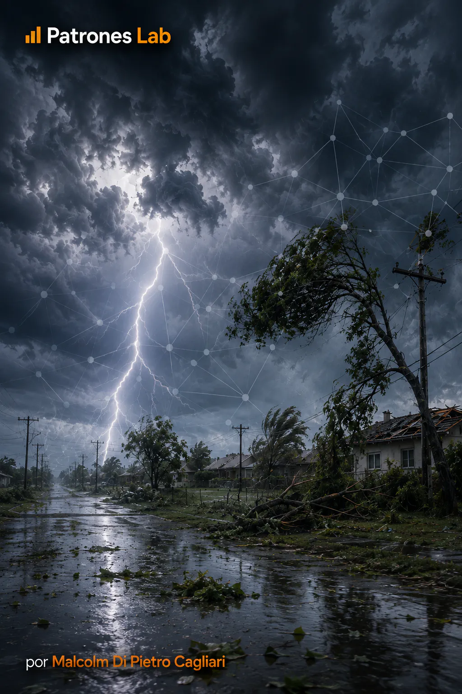
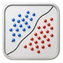
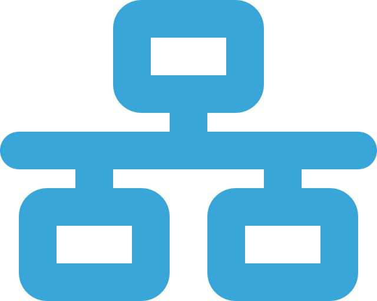

MACHINE LEARNING · PROGETTO 04

Progetto 16 · Machine Learning
Reti Neurali · Danni negli Eventi Meteo
Modello di classificazione applicato ai dati NOAA Storm Events per stimare la probabilità di danni economici registrati negli eventi meteorologici. Il progetto utilizza informazioni dal 2010 al 2025, confronta una regressione logistica e una rete neurale e ne valuta le prestazioni su anni successivi a quelli utilizzati per l’addestramento.


CONTESTO E OBIETTIVO
Il progetto utilizza 1.037.691 eventi meteorologici registrati da NOAA Storm Events tra il 2010 e il 2025. Ogni record include informazioni sul fenomeno osservato, sulla data e sul luogo, oltre alle caratteristiche meteorologiche e agli importi dei danni a proprietà e colture, quando segnalati.
A partire da questi dati è stata definita una variabile obiettivo che identifica gli eventi con danni economici registrati. L’analisi stima la probabilità di questo esito utilizzando informazioni temporali, territoriali e meteorologiche di ogni evento. Affinché la previsione dipenda da tali caratteristiche, gli importi dei danni e altre variabili che rivelano direttamente la risposta sono stati esclusi dai predittori.
Sono stati confrontati due modelli di classificazione supervisionata. La regressione logistica stabilisce un riferimento statistico tramite coefficienti associati alle variabili; la rete neurale offre maggiore flessibilità nell’apprendere le relazioni tra esse. I modelli sono stati addestrati sui dati dal 2010 al 2021, validati sul 2022 e sul 2023 e infine valutati sugli eventi del 2024 e del 2025. Questa suddivisione temporale permette di misurarne le prestazioni su dati più recenti di quelli utilizzati per stimare ciascun modello.
MODELLO E VALIDAZIONE
Preparazione dei dati e definizione del danno registrato
Per prima cosa sono stati scaricati e integrati in un’unica base i file annuali di NOAA Storm Events. Prima di preparare le variabili del modello sono stati controllati i nomi e i tipi delle colonne, i valori mancanti e la coerenza dei dati tra gli anni.
I danni a proprietà e colture compaiono nei file con unità diverse, per esempio migliaia o milioni. Sono stati trasformati in importi numerici confrontabili e sommati per costruire la variabile che indica se ogni evento presenta danni economici registrati.
VARIABILE OBIETTIVO · DANNO ECONOMICO REGISTRATO
y_i=\mathbb{1}\left(D_{\mathrm{prop},i}+D_{\mathrm{cult},i}>0\right)
L’indicatore vale 1 quando la somma dei danni materiali e agricoli registrati è maggiore di zero, e 0 negli altri casi. Per costruirlo, gli importi non indicati sono stati trattati come zero. Il modello identifica quindi i danni registrati da NOAA, che non rappresentano necessariamente tutti i danni che possono essersi verificati.
Per le previsioni sono state utilizzate 19 variabili di origine: dieci numeriche e nove categoriche. Comprendono dati su date, luoghi, tipi di evento, magnitudini e coordinate. Sono stati creati anche indicatori per segnalare le informazioni mancanti. Gli importi dei danni e le colonne che rivelavano direttamente l’esito sono stati esclusi dai predittori, affinché il modello apprendesse dalle caratteristiche dell’evento.
Suddivisione temporale e preparazione delle variabili
I record sono stati suddivisi cronologicamente in tre insiemi: 2010-2021 per l’addestramento, 2022-2023 per la validazione e 2024-2025 per il test finale. Il primo periodo è stato utilizzato per stimare i modelli; il secondo per seguirne le prestazioni durante lo sviluppo; il terzo è stato riservato al confronto finale su dati successivi.
Prima dell’addestramento è stato applicato un pretrattamento comune. Nelle variabili numeriche, i valori mancanti sono stati sostituiti con la mediana dell’insieme di addestramento e i valori sono stati standardizzati per lavorare su scale confrontabili. Le variabili categoriche sono state trasformate tramite one-hot encoding, che crea colonne indicatrici per le categorie osservate. Il pretrattamento è stato adattato ai dati di addestramento e poi applicato a validazione e test senza ricalcolarne i parametri.
Regressione logistica come modello di riferimento
La regressione logistica è stata il modello di riferimento dell’analisi. Durante l’addestramento stima un coefficiente per ogni variabile trasformata e combina questi contributi in un punteggio che riassume la tendenza dell’evento a presentare danni registrati. Il segno di ogni coefficiente indica se una variabile aumenta o riduce il punteggio, mantenendo costanti le altre; la sua grandezza riflette il peso del contributo sulla scala del modello. La funzione sigmoide trasforma il risultato in una probabilità tra 0 e 1.
PROBABILITÀ STIMATA CON REGRESSIONE LOGISTICA
\hat{p}_i=\frac{1}{1+e^{-(\beta_0+\sum_j\beta_jx_{ij})}}
Nell’equazione, le x rappresentano le variabili dopo il pretrattamento e le β sono i coefficienti stimati dai dati di addestramento. La sigmoide trasforma la combinazione lineare in una probabilità di danno economico registrato tra 0 e 1.
L’addestramento include la regolarizzazione L2 per moderare i coefficienti troppo grandi e favorire una stima più stabile quando si lavora con molte variabili trasformate. La regressione logistica offre così un punto di confronto concreto: probabilità, previsioni corrette ed errori vengono confrontati con quelli della rete neurale sugli stessi periodi, per valutare il contributo della maggiore flessibilità di quest’ultima.
Rete neurale e confronto dei risultati
Con le stesse variabili già preparate è stata addestrata una rete neurale a strati densi. A differenza della regressione logistica, la rete combina i segnali in più fasi mediante pesi appresi durante l’addestramento. Le attivazioni ReLU permettono di cogliere relazioni non lineari; il dropout aiuta a ridurre il sovradattamento e lo strato finale utilizza una sigmoide per esprimere la previsione come probabilità di danno registrato.
TRASFORMAZIONE NEGLI STRATI NASCOSTI
h^{(l)}=\mathrm{ReLU}\left(W^{(l)}h^{(l-1)}+b^{(l)}\right)
In ogni strato, i pesi W e i bias b trasformano l’informazione ricevuta. La funzione ReLU permette alla rete di apprendere relazioni non descrivibili con una combinazione puramente lineare.
PROBABILITÀ DELLA RETE NEURALE
\hat{p}_i=\sigma\left(w^\top h_i+b\right)
Lo strato finale applica la funzione sigmoide σ alle informazioni apprese dalla rete e restituisce una probabilità di danno registrato per ogni evento.
Per addestrare la rete sono stati utilizzati Adam, che modifica i pesi in base agli errori del modello, e l’entropia incrociata binaria, che misura la differenza tra le probabilità previste e gli esiti osservati. Il monitoraggio della validazione ha permesso di regolare il tasso di apprendimento e interrompere l’addestramento quando non migliorava più, limitando il sovradattamento.
PERDITA · ENTROPIA INCROCIATA BINARIA
\mathcal{L}=-\frac{1}{n}\sum_{i=1}^{n}\left[y_i\log(\hat{p}_i)+(1-y_i)\log(1-\hat{p}_i)\right]
L’entropia incrociata confronta l’esito osservato y con la probabilità stimata p̂. Quanto più basso è il suo valore, tanto meglio le probabilità si adattano agli esiti reali.
Il confronto finale è stato effettuato con ROC AUC e PR AUC, che valutano quanto bene ogni modello separa gli eventi con danni registrati dagli altri. PR AUC è particolarmente importante perché gli eventi con danni positivi sono meno frequenti. Sono stati calcolati anche precisione, recall, F1 e matrici di confusione per verificare quanti casi positivi rileva ogni modello e quanti allarmi sono corretti.
PRECISIONE E RICHIAMO DEGLI EVENTI CON DANNO
\mathrm{Precision}=\frac{VP}{VP+FP}
\mathrm{Recall}=\frac{VP}{VP+FN}
VP indica i casi con danno rilevati correttamente dal modello; FP gli allarmi positivi per eventi senza danni registrati; FN i casi con danno non identificati dal modello. La precisione misura la quota di allarmi positivi corretti e il recall la quota di eventi con danno che il modello è riuscito a rilevare.
CONSEGNA E APPRENDIMENTO
Nel test finale sugli eventi del 2024-2025, la rete neurale ha ottenuto un ROC AUC di 0,9324 e un PR AUC di 0,8004. La regressione logistica ha raggiunto rispettivamente 0,8961 e 0,6691. La rete neurale ha distinto meglio gli eventi con danni registrati, con un vantaggio particolarmente evidente in PR AUC.
Considerando soltanto gli eventi con danni registrati, la rete neurale ha raggiunto una precisione di 0,7942, un recall di 0,6243 e un F1 di 0,6991. La regressione logistica ha ottenuto 0,7580, 0,5023 e 0,6042. In termini pratici, la rete neurale ha identificato una quota maggiore di questi eventi, mantenendo una precisione superiore nei suoi allarmi positivi.
METRICA F1 · EQUILIBRIO TRA PRECISIONE E RECALL
F_1=2\,\frac{\mathrm{Precision}\cdot\mathrm{Recall}}{\mathrm{Precision}+\mathrm{Recall}}
F1 combina precisione e recall in un unico indicatore. Serve per confrontare i modelli quando è importante rilevare la classe positiva e, allo stesso tempo, evitare troppi allarmi errati.
Il confronto fornisce probabilità stimate per evento, previsioni di entrambi i modelli, matrici di confusione, metriche comparative e grafici dell’addestramento. Il pretrattamento e i modelli sono stati conservati per applicare gli stessi criteri a nuovi record con le stesse variabili. Quando saranno aggiunti dati di anni successivi, le previsioni potranno essere confrontate con i danni registrati per verificare se le prestazioni si mantengono o se conviene ripetere l’addestramento.